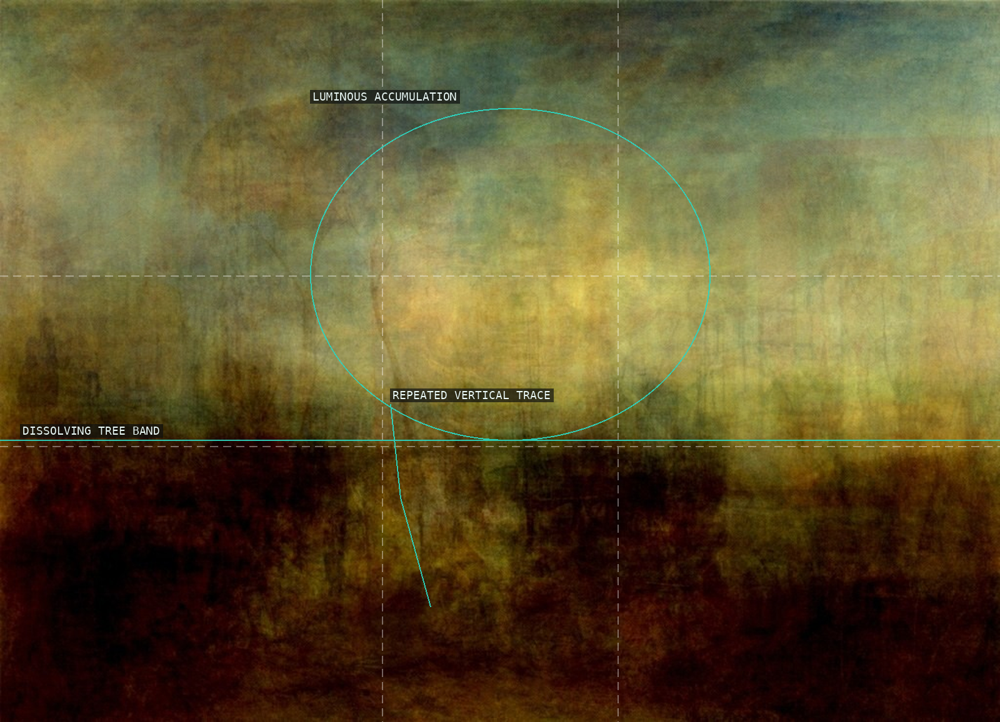
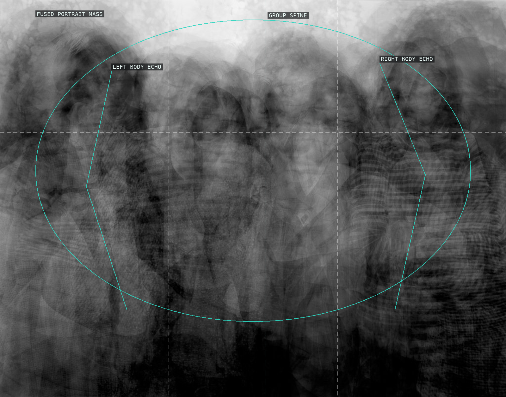
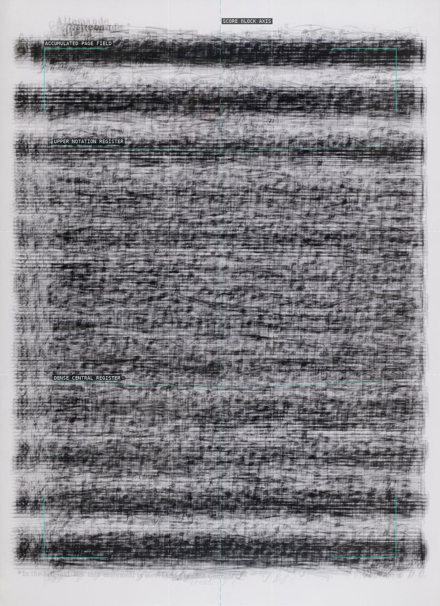
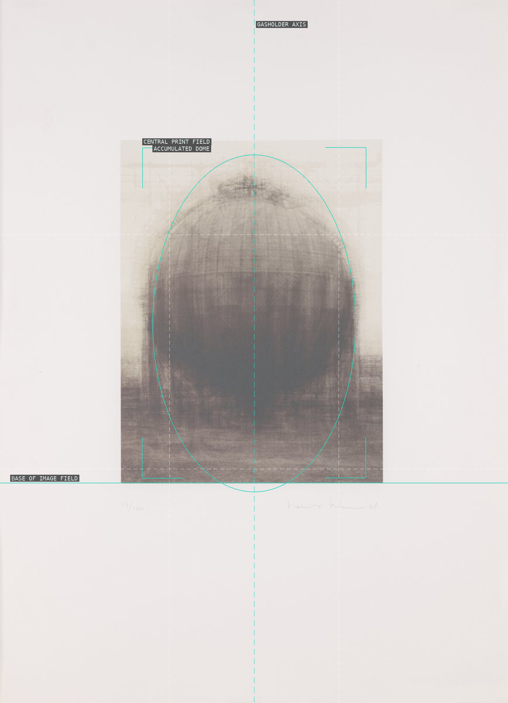
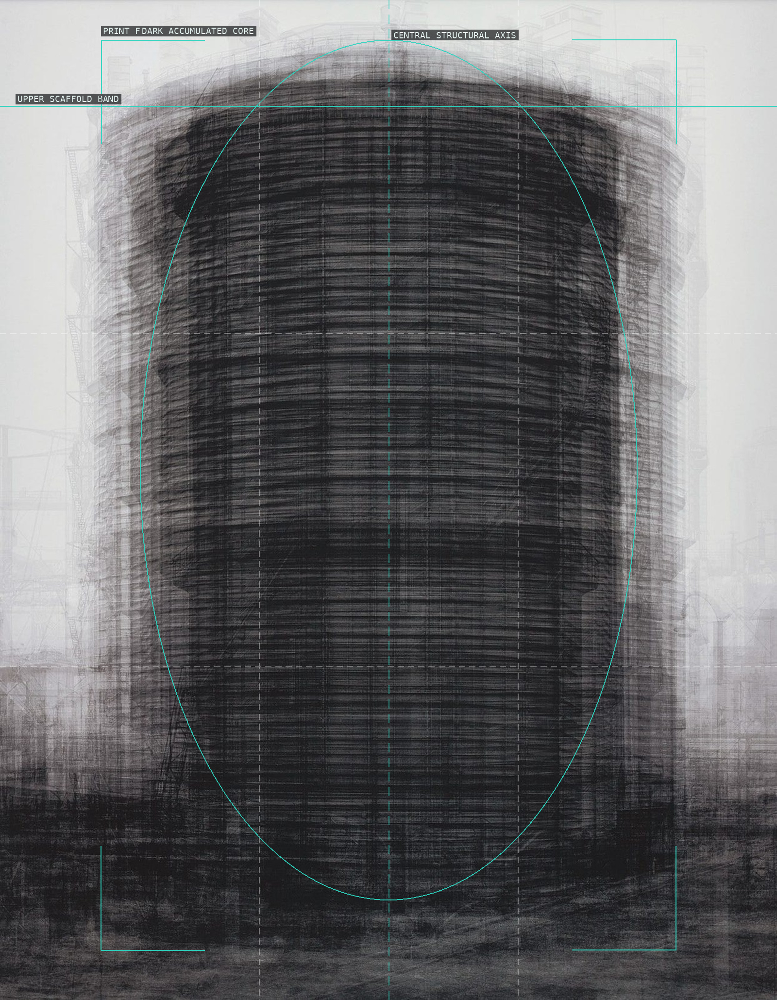
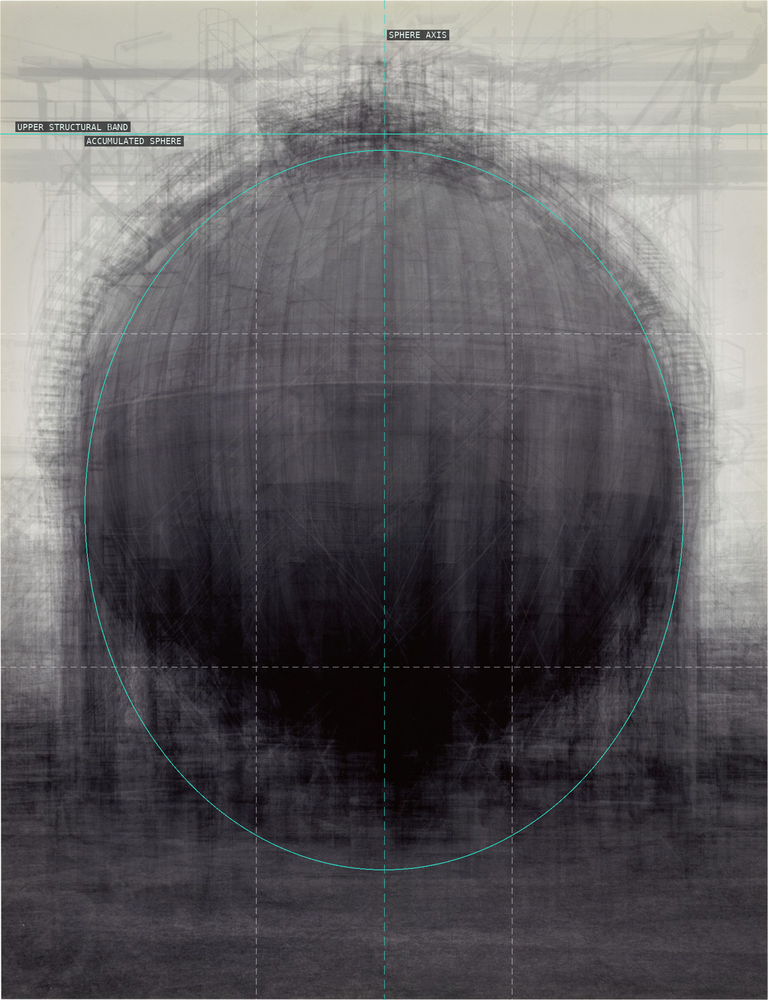
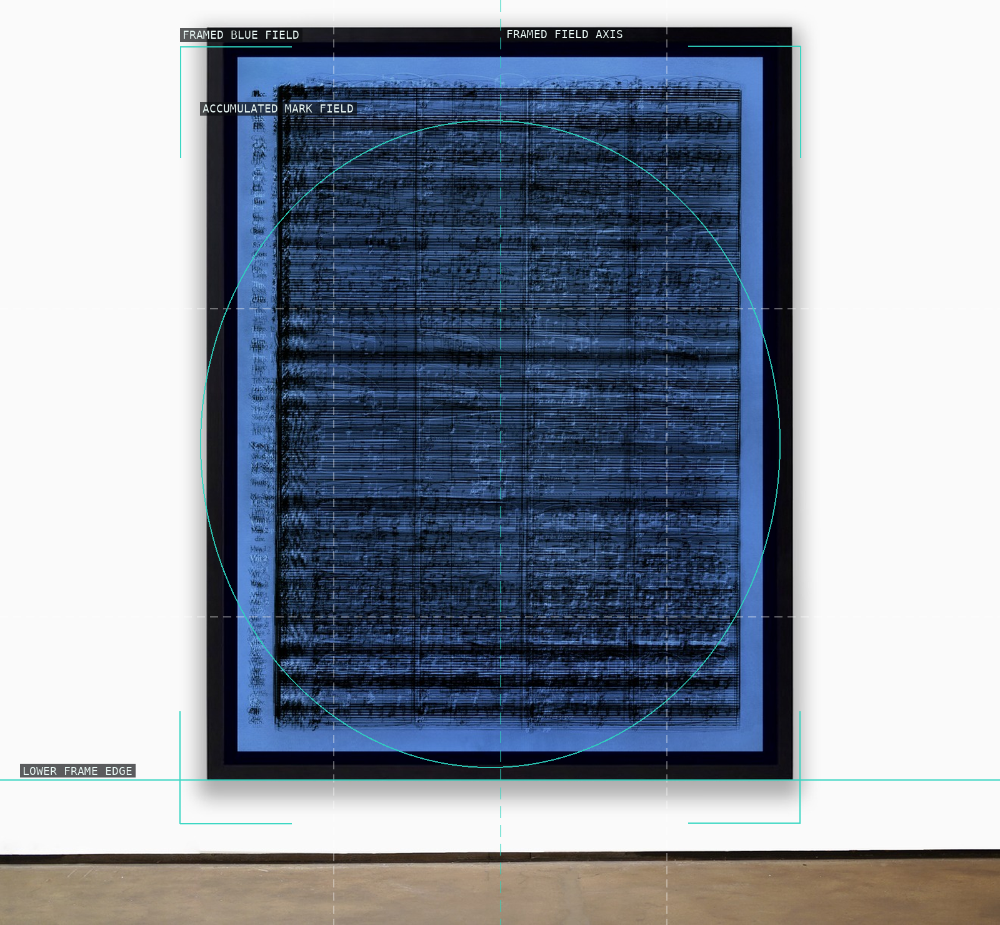
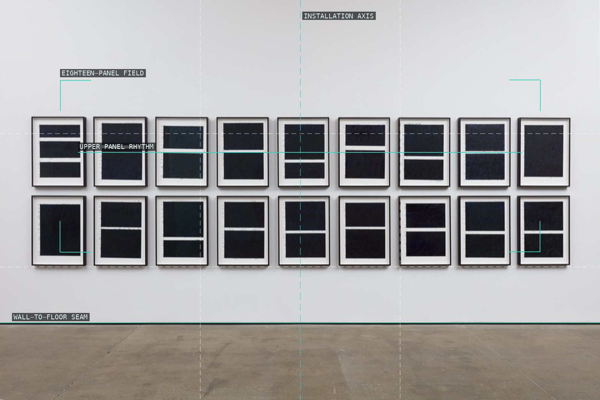

/* idris-khan - proofs */
8 plates. Deterministic overlays rendered by the composition-analysis skill.

01-every-william-turner-postcard
A dissolving tree band holds the luminous accumulated landscape above dark ground.

02-every-nicholas-nixon-brown-sisters
Repeated bodies fuse into an unstable collective portrait mass.

03-bach-six-suites-solo-cello
Layered score pages make a centered field of horizontal rhythm.

04-every-becher-gasholder
A pale surround isolates a trembling centered industrial dome.

05-every-becher-prison-gasholder
Repeated structure condenses into a dark upright core and halo.

06-every-becher-spherical-gasholders
The archive gathers into a hovering spherical accumulation.

07-lost-happiness
A framed blue field concentrates layered marks into one register.

08-blue-rhythms
Eighteen panels become one horizontal cadence across the gallery wall.